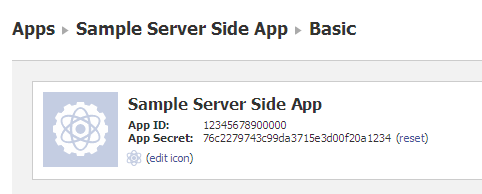

3 Usage - Reference Documentation
Authors: Igor Artamonov
Version: 0.10
Table of Contents
3 Usage
3.1 Basic Usage
Example app
You can take a look at Example Application, it's very basic app, that have only one page, with 'Facebook Connect' button. Just clone it, put your FB App credentials, and play with it.How to add Facebook Authentication into your existing application
Initial plugin config
AtConfig.groovy setup full name (including package name, if used) of Facebook user domain, like:grails.plugins.springsecurity.facebook.domain.classname='FacebookUser'
Add FB App credentials
You should create a Facebook App and copy App ID and Secret:intoConfig.groovy:
grails.plugins.springsecurity.facebook.appId=12345678900000 grails.plugins.springsecurity.facebook.secret=76c2279743c99da3715e3d00f29a1234
Add Facebook Connect button
There is special taglib (<facebookAuth:) that can be used at your view (any GSP page) to add Facebook Connect button.Following code displays connect button for not authorized user, or show a welcome message to logged in user:
<sec:ifNotGranted roles="ROLE_USER"> <facebookAuth:connect /> </sec:ifNotGranted> <sec:ifAllGranted roles="ROLE_USER"> Welcome <sec:username/>! (<g:link uri="/j_spring_security_logout">Logout</g:link>) </sec:ifAllGranted>
Run
That's it! Run your application, and test that everything is working.3.2 Filters
How it works
Plugin is based on Spring Security and uses web filters for authorization, for more details see Spring Security docsAvailable filters
There are 3 types of authorization, and 3 filters:- FacebookAuthRedirectFilter - server-side authorization (used by default)
- FacebookAuthCookieTransparentFilter - automatic client-side authorization
- FacebookAuthCookieDirectFilter - manual client-side authorization
Server-Side authorization (FacebookAuthRedirectFilter)
It's a standard Login for Server-side Apps. After clicking on 'connect button' user gets redirected to special Facebook page, for authentication, and then redirected back to your app.Transparent cookie based authorization (FacebookAuthCookieTransparentFilter)
Based on Facebook Javascript SDK authorization. On client side it makes Facebook authorization and put Facebook Cookie (it's made by Facebook Javascript, you don't need anything special)After successful authorization on client side, the browser should reload current page. Or open any other page.This filter will process each request, and if it sees valid Facebook cookie, it makes authorization for current user. If it's a new user, it creates a new one for application, with provided Facebook credentials.It's per-request authorization. That means that this filter will try to authorize user on each page request.
Manual cookie based authorization (FacebookAuthCookieDirectFilter)
Based on Facebook Javascript SDK authorization. On client side it makes Facebook authorization and put Facebook Cookie (it's made by Facebook Javascript, you don't need anything special)Same as FacebookAuthCookieTransparentFilter, it parse Facebook cookie, but only for specified url. Like username/password filter from spring-security-core or similar. After successful authorization it can redirect user to specified url.Filter configuration
You can use config parametergrails.plugins.springsecurity.facebook.filter.type to configure which filters
you want to use in your application.It's not a Spring Security configuration, not a configuration for Spring filters. Just a extra configuration, that used only by this plugin.By default it uses only one 'redirect' filter:
grails.plugins.springsecurity.facebook.filter.type='redirect'
grails.plugins.springsecurity.facebook.filter.type='transparent,cookieDirect'
redirect- use standard server side authorizationtransparent- use transparent cookie based authorizationcookieDirect- use manual cookie based authorization